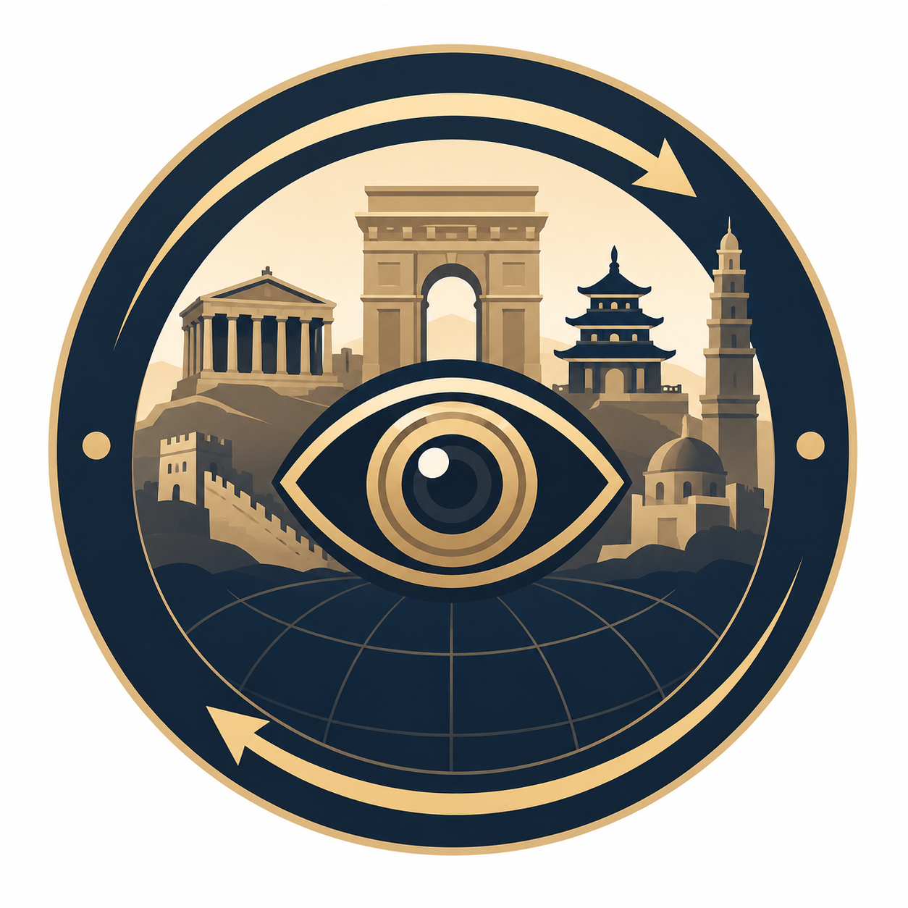

Construction des Arènes de Nîmes
Cette vidéo est désormais disponible sur la chaîne YouTube Portal Temporis.
Découvrez en timelapse les différentes étapes de la construction de l’amphithéâtre romain de Nîmes.
Voir la vidéo sur YouTubePortal Temporis
